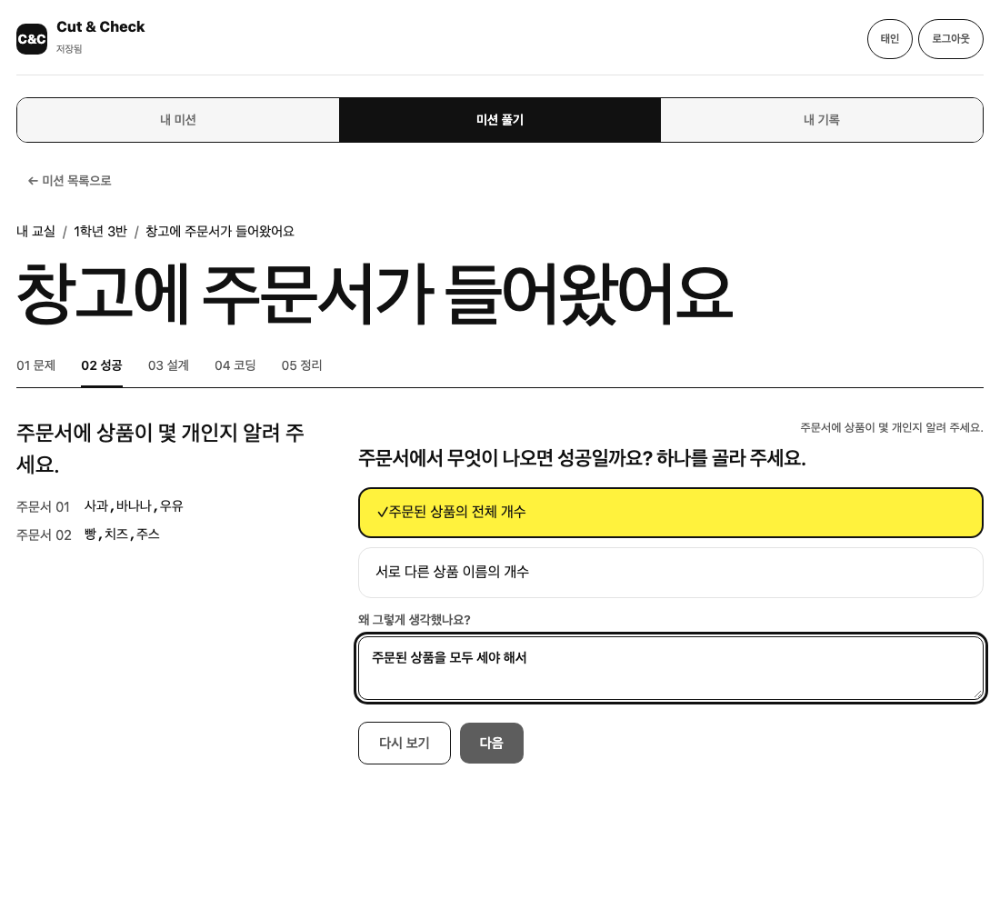
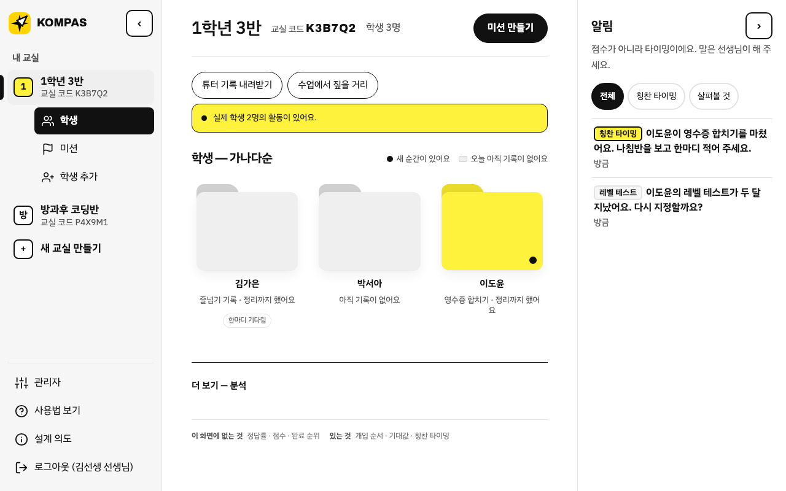
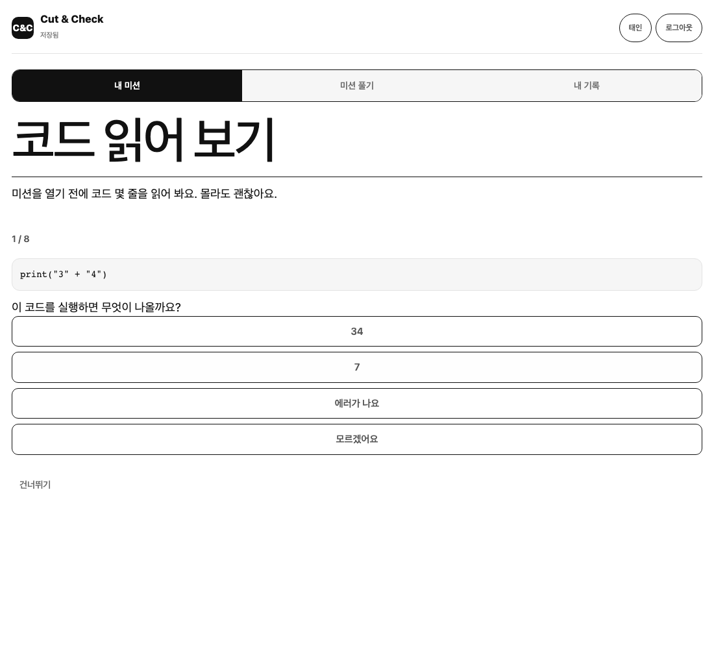
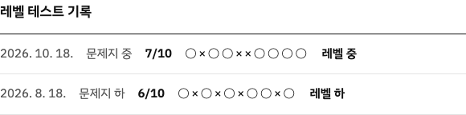

KOMPAS
의도를 코드로 옮긴다
중학생이 모호한 요청을 코드로 옮기는 파이썬 수업 도구
만들기 전에 강사 다섯 명에게 물었습니다 · 2026년 10월 18–20일 · 초·중등 파이썬 · 엔트리 · SQL 등을 가르치는 강사
강사에게는 무엇을 물었나
다음 장 — 가장 뾰족하게 드러난 문제 셋객관식 하나 고르기 · 여러 개 고르기 · 1–5 척도 · 서술
강사 설문에서 · 다섯 명 중 몇 명이 그렇다고 답했나
가장 뾰족하게 드러난 문제 셋
설계도를 써 본 학생에게 물었습니다 · 응답 2명(n = 2) · 중1 · 중2 · 파이썬 3–6개월 · 6개월 넘음
학생에게는 무엇을 물었나
다음 장 — 학생이 가장 어려워한 것두 명뿐이라 경향만 봅니다
학생 설문에서 · 두 명 중 몇 명이 골랐나 · n = 2
학생이 가장 어려워한 것
기능마다 이 질문 하나로 거릅니다
시작은 대신해주고,
판단은 하나도 대신하지 않는다.
이건 시작 비용을 줄이는 건가, 판단을 대신하는 건가? 판단을 대신하는 쪽이면 아무리 친절해 보여도 만들지 않습니다.
서비스화 · 수업 한 번, 시연에서 이 순서 그대로 봅니다
그래서 만든 것: KOMPAS
중학생이 모호한 요청을 받아 성공을 정하고, 설계하고, 코드로 옮기고, 스스로 판정하는 파이썬 수업 도구
학생
- 01 문제무엇을 할지만 읽는다. 방법은 없다
- 02 성공함정 섞인 보기에서 성공을 고른다
- 03 설계카드 순서와 이유 한 줄
- 04 코딩튜터는 문법만 준다. 반례까지 실행
- 05 정리자기 말로 한 문장
강사
- 미션 만들기AI 초안 · 실행 검사 · 강사가 확정
- 알림칭찬 타이밍만 알린다
- 나침반12칸 체크 · 바늘 · 튜터 질문
- 한마디말은 강사가 한다

학생 · 02 성공 조건

강사 · 칭찬 타이밍 알림
이름은 왜 KOMPAS 인가

목적지는 몰라도, 방향은 안다.
나침반은 목적지를 알려주지 않고 오직 방향만 가리킵니다. KOMPAS 는 학생이 어디에 도달할지 정해주지 않지만, 지금 어느 쪽으로 나아가야 하는지는 분명히 알려줍니다.
바늘은 어디에 서 있든, 길이 어떻게 바뀌든 같은 쪽을 가리킵니다 — 계획은 바뀌어도 의도는 흔들리지 않는다.
- ▲ 북 이해
- ◧ 동 설계
- ○ 남 구현
- ◇ 서 검증
한 문제를 푸는 순서가 나침반을 시계 방향으로 한 바퀴 돕니다. 아이콘에는 지도도, 도착 핀도 없습니다. COMPASS 는 흔한 낱말이라 묻혀서, 나침반인 줄 알아보면서도 이름처럼 보이는 K 로 씁니다.
강사 · 미션 만들기 전에 · 레벨 테스트 문제지 하 · 중 · 상
맞았는지는 강사만 봅니다
학생 화면
- 문제만 나옵니다. 문제지 이름 · 맞음 · 점수가 없습니다.

강사 화면
- 학생별 레벨과 문항별 기록. 반 분포로 문제 난이도를 맞춥니다.

강사 · 학생 상세 · 미션 하나를 마칠 때마다 · 그림은 강사 화면과 같은 js/core/compass.js
나침반은 벡터로 움직인다
지금 보는 것
강사비상 화면
학생비상 화면
일부러 하지 않은 것
- 점수와 순위는 일부러 뺐어요. 숫자가 보이면 학생은 결과를 맞히러 가니까요.
- 정답 순서와 맞춰 보는 채점도 없어요. 채점하는 순간 학생은 우리 답을 추측하기 시작해요.
- 칭찬은 AI 가 쓰지 않아요. 알림은 지금이 그때라는 것만 알리고, 말은 선생님이 해요.
다음에 할 것
- 10명 실제 수업 · 10/27–31사전·사후 설문과 관찰 기록
- 나침반 가중치 · 상쇄 기준 조정실제 수업 기록으로
- 튜터 · 레벨 테스트 실사용 점검튜터가 답을 보내지 않은 비율, 문제지 난이도
- 결과를 11월 보고서에 반영